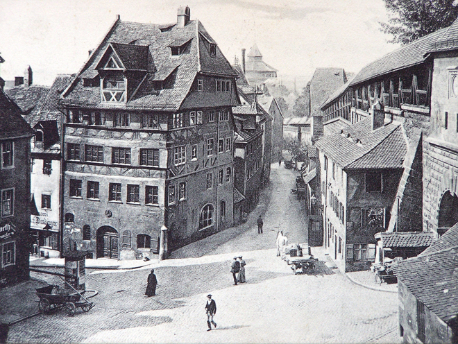
I had gone to Munich for a weekend of opera - Il barbiere di Siviglia on the Friday and Handel's Serse on the following Monday. With a free day on Saturday, I took the train to Nuremberg to visit the birthplace and home of my idol, Albrecht Dürer (1471–1528).
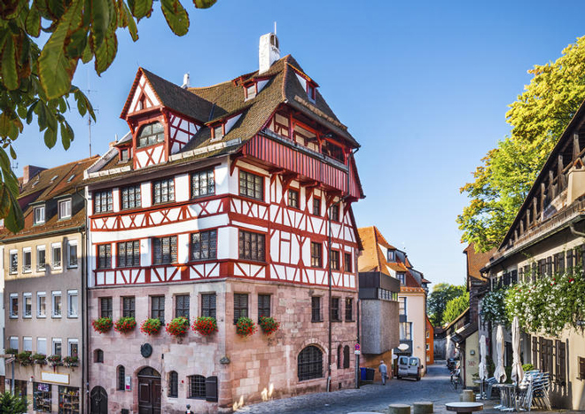
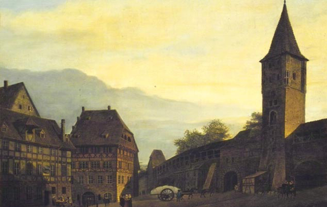
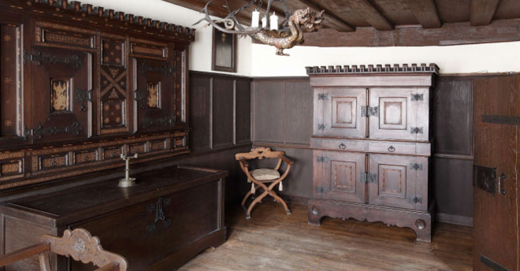
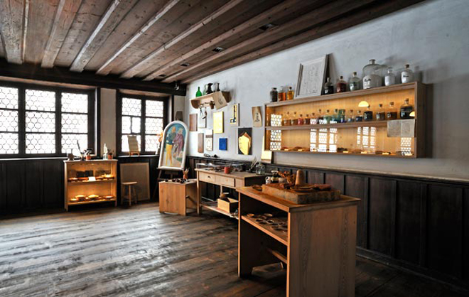
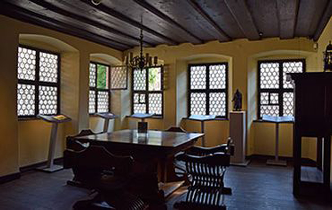
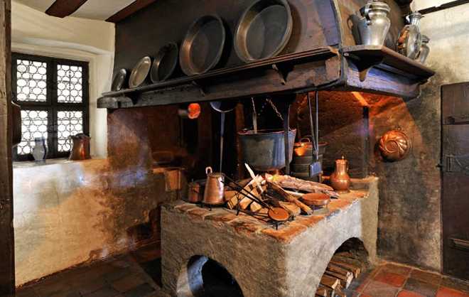
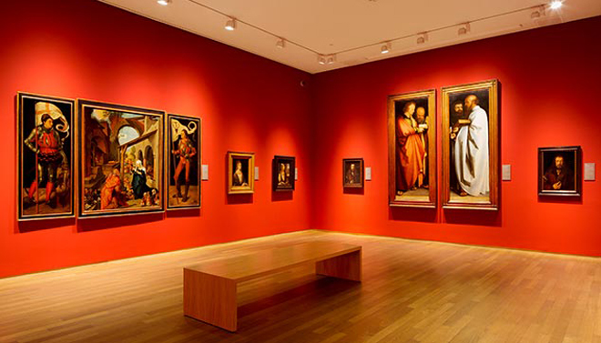
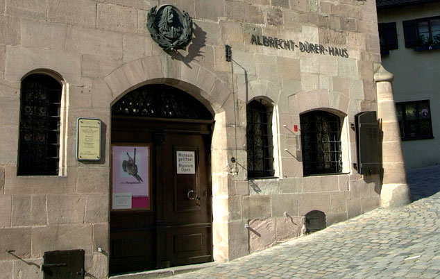
However, Nuremberg is also known for other, less uplifting, reasons: the most notorious being the location of the Nazi Party Rally Grounds (German: Reichsparteitagsgelände, literally: Reich Party Congress Grounds) which covered about 11 square kilometres to the southeast of Nuremberg. Six Nazi party rallies were held there between 1933 and 1938.
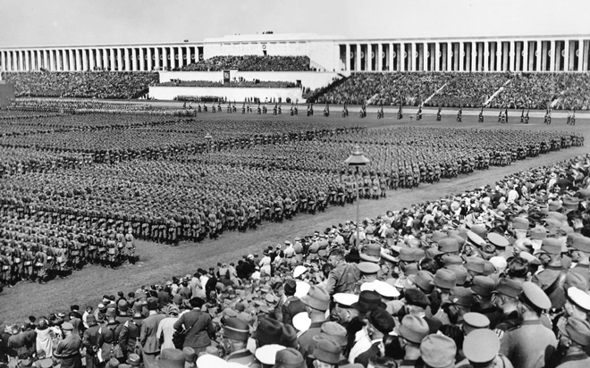
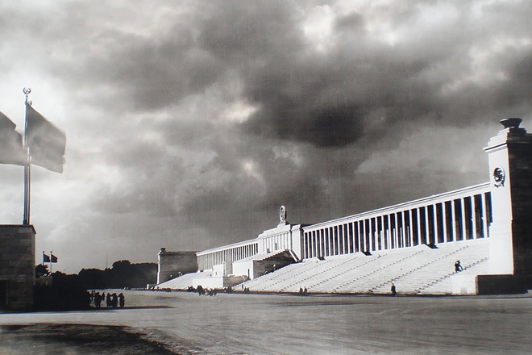
I took a train out to the Rally Grounds to see for myself. The entire 7-square-mile site was designed by chief Nazi architect Albert Speer with close input from Adolf Hitler. The site was designed on a grand scale to dwarf the size of the individual participants and to herd them into larger groups to foster collective solidarity and included many elements of Nazi architecture: a neoclassical style with a strong, utilitarian function.
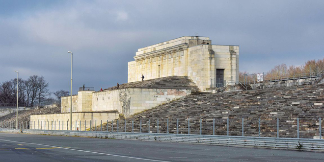
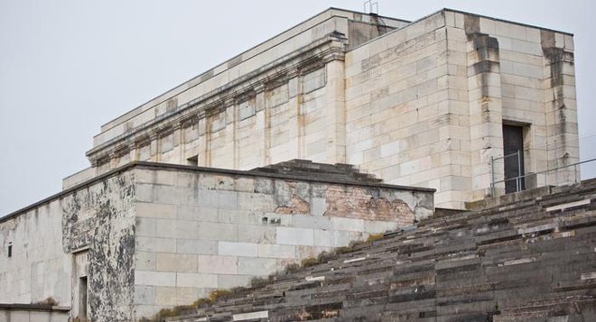
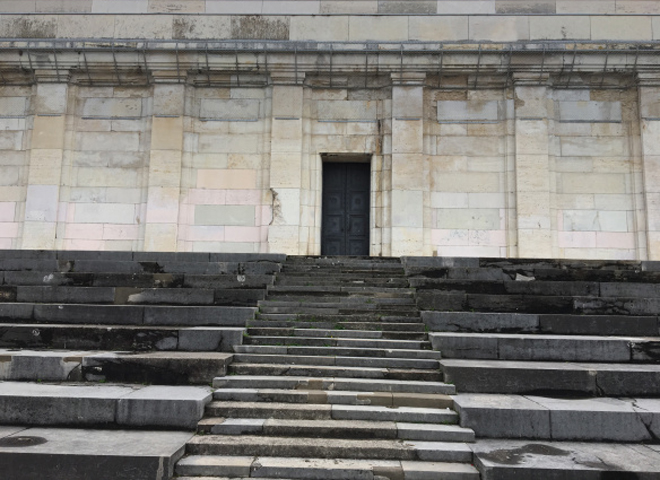
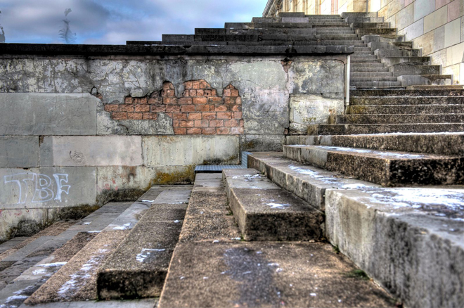
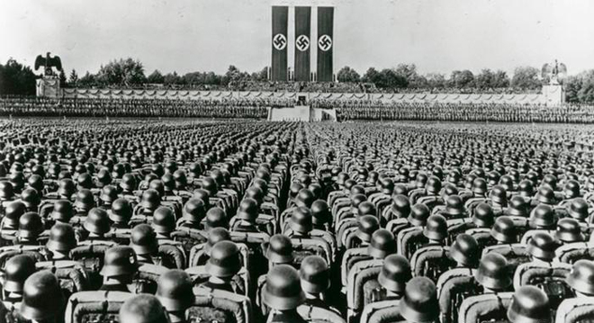